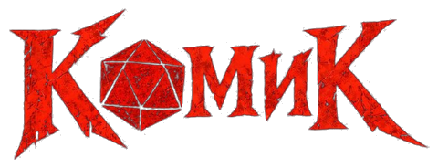
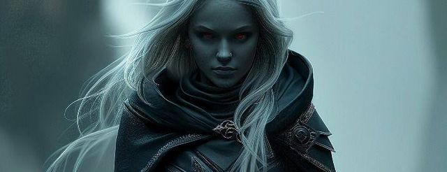
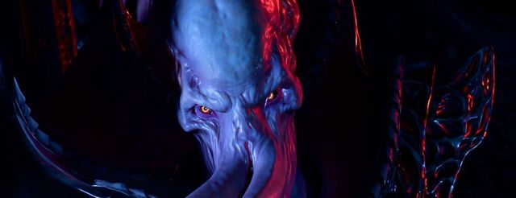
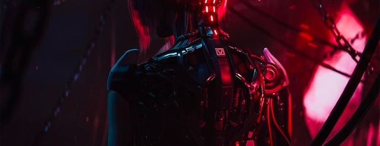
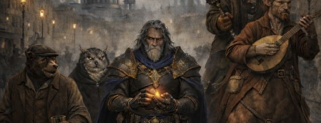
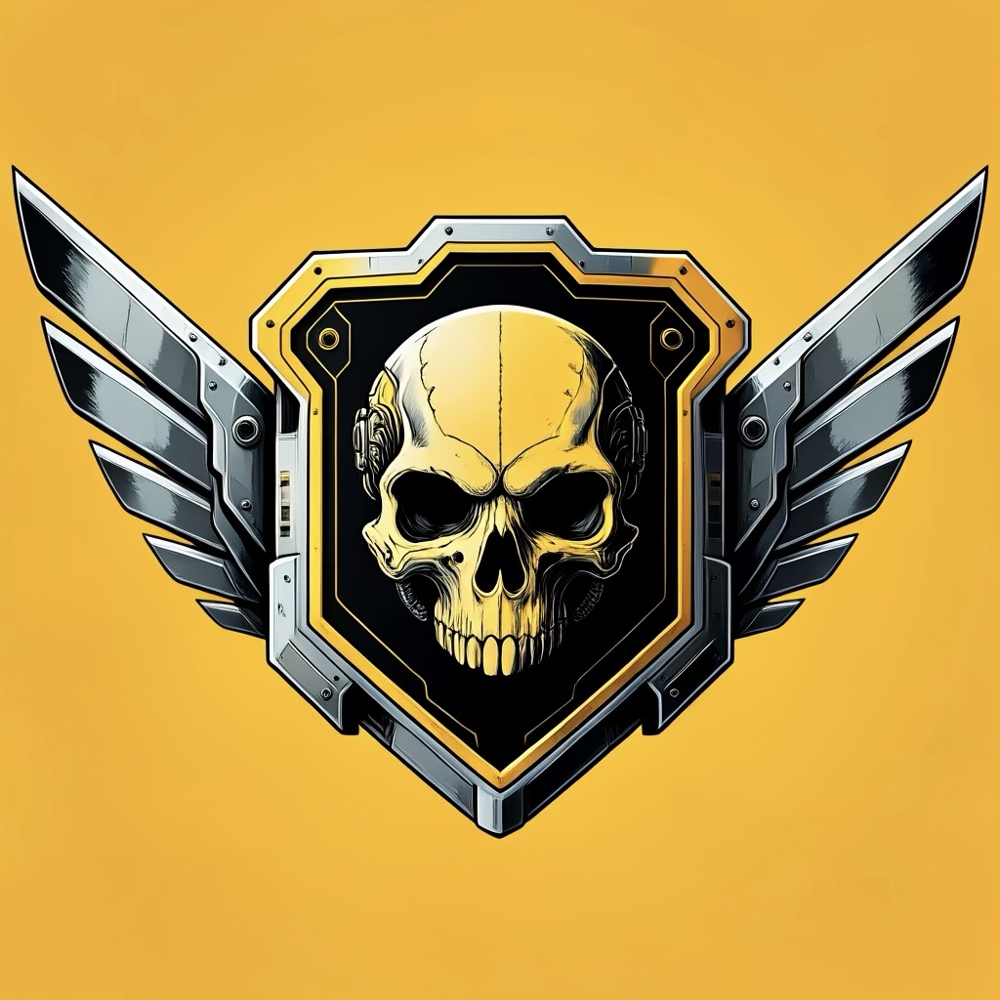
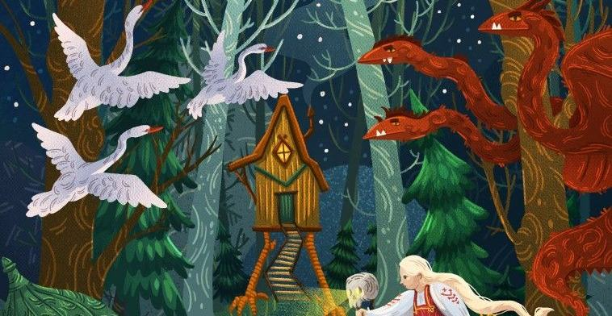

Комик
ASS
I
MILATION
Новости
Доска ходов
Игрок
Архив
Настройки
Музыка


LEGACY
Moon of Faerûn

NEVERLAND
Call of the Ancients

ASS
I
MILATION
Life on the Edge

TERRA AETERNA
Eternal Earth

GALACTIC WAR
Managed Democracy

Русские сказки
Beyond Thrice-Nine Lands
✎
New day in New-Liberty!
Записаться на игру
Расписание игр · ГМ
+ Новость
Boosty
Telegram
Discord
📜 Хронология мира
+ Карточка
← В архив
Хронология
Добавить персонажа
к100
к20
к12
к10
к8
к6
к4
Кальк
✕
КАЛЬКУЛЯТОР БРОСКА
D4
−
0
+
D6
−
0
+
D8
−
0
+
D10
−
0
+
D12
−
0
+
D20
−
0
+
D100
−
0
+
Сброс
Бросить
Калькулятор характеристик
✕
Архив
✕
Витрина листа
✕
▮